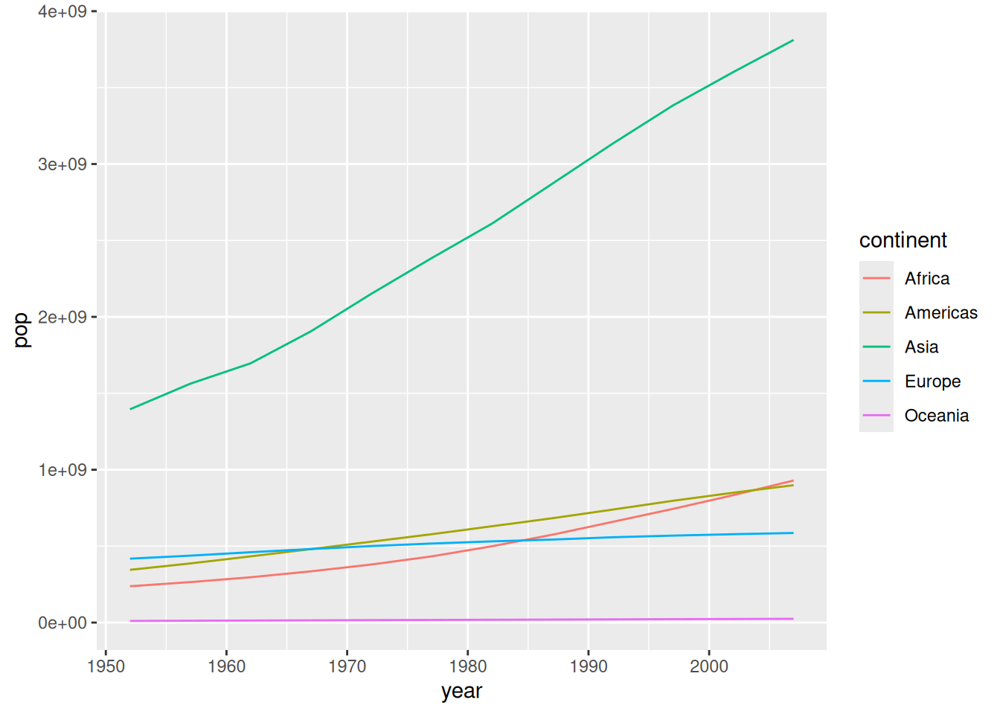
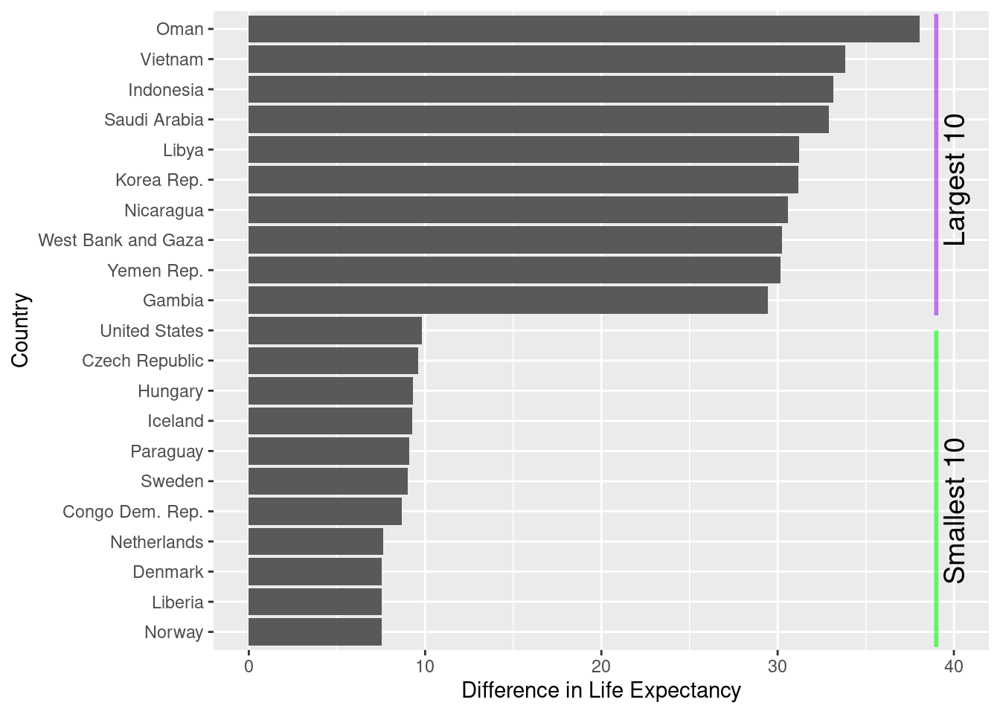

gapminder <- read.csv("https://raw.githubusercontent.com/resbaz/r-novice-gapminder-files/master/data/gapminder-FiveYearData.csv")R dplyr: preparing data for analysis
What are we going to learn?
In this hands-on session, you will use R, RStudio and the dplyr package to transform your data.
Specifically, you will learn how to explore, filter, reorganise and process a table of data, focusing on six main “verbs”:
select(): pick variablesfilter(): pick observationsarrange(): reorder observationsmutate(): create new variablessummarise(): collapse to a single summarygroup_by(): change the scope of function
Keep in mind
- Everything we write today will be saved in your project. Please remember to save it in your H drive or USB if you are using a Library computer.
- R is case sensitive: it will tell the difference between uppercase and lowercase.
- Respect the naming rules for objects (no spaces, does not start with a number…).
Help
For any dataset or function doubts that you might have, don’t forget the three ways of getting help in RStudio:
- the shortcut command:
?functionname - the help function:
help(functionname) - the keyboard shortcut: press F1 after writing a function name
Open RStudio
- If you are using your own laptop please open RStudio
- If you need them, we have installation instructions
- Make sure you have a working internet connection
- On Library computers (the first time takes about 10 min.):
- Log in with your UQ credentials (student account if you have two)
- Make sure you have a working internet connection
- Open the Start menu
- Search for and open ZENworks
- Look for RStudio
- Double-click on RStudio which will install both R and RStudio
Setting up
Install the dplyr package
If you don’t have it already, you can install dplyr with the command: install.packages("dplyr")
Note
At home, you can install the whole “tidyverse”, a meta-package useful for data science, which includes dplyr: install.packages("tidyverse")
New project
- Click the “File” menu button (top left corner), then “New Project”
- Click “New Directory”
- Click “New Project” (“Empty project” if you have an older version of RStudio)
- In “Directory name”, type the name of your project, e.g. “dplyr_intro”
- Select the folder where to locate your project: for example, the
Documents/RProjectsfolder, which you can create if it doesn’t exist yet. - Click the “Create Project” button
Create a script
We will use a script to write code more comfortably.
- Menu: Top left corner, click the green “plus” symbol, or press the shortcut (for Windows/Linux) Ctrl+Shift+N or (for Mac) Cmd+Shift+N. This will open an “Untitled1” file.
- Go to “File > Save” or press (for Windows/Linux) Ctrl+S or (for Mac) Cmd+S. This will ask where you want to save your file and the name of the new file.
- Call your file “process.R”
Introducing our data
Let’s import and explore our data.
- read the data into an object called “gapminder”, using
read.csv():
Note
Remember you can use Ctrl + Enter (or Cmd + Enter on a Mac) to execute a command from the script.
- Explore the gapminder dataset using
dim()andstr()
How can we get the dataframe’s variable names? There are two ways: names(gapminder) returns the names regardless of the object type, such as list, vector, data.frame etc., whereas colnames(gapminder) returns the variable names for matrix-like objects, such as matrices, dataframes…
To return one specific column in the dataframe, you can use the dollar syntax: gapminder$year. For example, try these:
class(gapminder$country) # what kind of data?[1] "character"range(gapminder$year) # what is the time range?[1] 1952 2007Basic dplyr verbs
The R package dplyr was originally developed by Hadley Wickham for data manipulation.
The dplyr website introduces the package as follows:
Notedplyr essentials
dplyr is a grammar of data manipulation, providing a consistent set of verbs that help you solve the most common data manipulation challenges:
mutate()adds new variables that are functions of existing variables.select()picks variables based on their names.filter()picks cases based on their values.summarise()reduces multiple values down to a single summary.arrange()changes the ordering of the rows.
These all combine naturally with group_by() which allows you to perform any operation “by group”.
To use the verbs to their full extent, we will need pipes and logical operators, which we will introduce as we need them.
Let’s load the dplyr package to access its functions:
library(dplyr)
Attaching package: 'dplyr'The following objects are masked from 'package:stats':
filter, lagThe following objects are masked from 'package:base':
intersect, setdiff, setequal, union
Note
You only need to install a package once (with install.packages()), but you need to reload it every time you start a new R session (with library()).
1. Pick variables with select()
select() allows us to pick variables (i.e. columns) from the dataset. For example, to only keep the data about year, country and GDP per capita:
gap_small <- select(gapminder, year, country, gdpPercap)The first argument refers to the dataframe that is being transformed, and the following arguments are the columns you want to keep. Notice that it keeps the order you specified?
You can also rename columns in the same command:
gap_small <- select(gapminder, year, country, gdpPerPerson = gdpPercap)If you have many variables but only want to remove a small number, it might be better to deselect instead of selecting. You can do that by using the - character in front of a variable name:
gap_remove <- select(gapminder, -continent)You can also select a range of columns, by specifying the first and last column names with the : character in between:
gap_range <- select(gapminder, country:continent)And if you know the position of the columns but not the names, you can also use indices:
gap_indices <- select(gapminder, 1:3, 5)There are many helper functions to select columns according to a logic. For example, to only keep the columns that have “a” in their names:
gap_a <- select(gapminder, contains("a"))To see more helper operators and functions, look at the select() help page: ?select
2. Pick observations with filter()
The filter() function allows us to pick observations depending on one or several conditions. But to be able to define these conditions, we need to learn about logical operators.
Logical operators allow us to compare things. Here are some of the most important ones:
==: equal!=: different or not equal>: greater than<: smaller than>=: greater or equal<=: smaller or equal
Warning
Remember: = is used to pass on a value to an argument, whereas == is used to check for equality. Using = instead of == for a logical statement is one of the most common errors and dplyr will give you a reminder in the console when this happens.
You can compare any kind of data. For example:
1 == 1[1] TRUE1 == 2[1] FALSE1 != 2[1] TRUE1 > 0[1] TRUE"money" == "happiness"[1] FALSEWhen R executes these commands, it answers TRUE of FALSE, as if asked a yes/no question. These TRUE and FALSE values are called logical values.
To see if a value is part of a set of values, you can use the %in% operator. For example, to confirm that I have “coffee” in my grocery list, but not “mangoes”:
groceries <- c("tea", "coffee", "milk")
"coffee" %in% groceries[1] TRUE"mangoes" %in% groceries[1] FALSENote that we can compare a single value to many. For example, compare one value to five others:
1 == c(1, 2, 3, 1, 3)[1] TRUE FALSE FALSE TRUE FALSEThis kind of operation results in a logical vector with a logical value for each element. This is exactly what we will use to filter our rows.
For example, to filter the observations for Australia, we can use the following condition:
australia <- filter(gapminder, country == "Australia")
australiaThe function compares the value “Australia” to all the values in the country variable, and only keeps the rows that have TRUE as an answer.
Since dplyr 1.2, we can use the companion function filter_out() to remove the rows that match a condition. For example, to exclude Europe from the dataset:
no_europe <- filter_out(gapminder, continent == "Europe")
# getting the unique values confirms it has worked:
unique(no_europe$continent)[1] "Asia" "Africa" "Americas" "Oceania"
WarningHandling of missing values
Both filter() and filter_out() interpret NAs as `FALSE. This means that filter() discards the rows that return NA, and filter_out() keeps them, making the two functions complimentary.
It is recommended to use filter() when the intent is to keep rows, and filter_out() when the intent is to drop rows. This is important because seemingly equivalent operations can result in different results. For example, consider the different number of rows returned by these two operations:
nrow(filter(starwars, hair_color != "blond")) # discards NAs[1] 79nrow(filter_out(starwars, hair_color == "blond")) # keeps NAs[1] 84If the intent is to “drop starwars characters with blond hair”, the second command is preferred because it will keep the characters that don’t have data about hair colour.
Wrapping up the topic of missing data, here are other useful functions:
- For creating conditions based on NA values, use the
is.na()function. - For handling missing data more easily, see tidyr’s
drop_na()andreplace_na()functions.
Now, let’s filter the rows that have a life expectancy lifeExp greater than 81 years:
life81 <- filter(gapminder, lifeExp > 81)
TipAgainst all logic
Note that you do not necessarily need to write your own logical operations to pick rows. dplyr offers “slicing” functions, as shortcuts or to cover different needs:
slice(): by row indexslice_sample(): random sample of rows (number or fraction)slice_max()andslice_min(): rows that hold a variable’s highest or lowest valuesslice_head()andslice_tail(): beginning or end rows
Similarly to the previous example, we can use slice_max() to get the 10 (sorted) observations with the highest life expectancy:
slice_max(gapminder, lifeExp, n = 10)3. Reorder observations with arrange()
arrange() will reorder our rows according to a variable, by default in ascending order:
arrange(life81, lifeExp)If we want to have a look at the entries with highest life expectancy first, we can use the desc() function (for “descending”):
arrange(life81, desc(lifeExp))We could also use the - shortcut, which only works for numerical data:
arrange(life81, -lifeExp)The pipe operator
What if we wanted to get that result in one single command, without an intermediate life81 object?
We could nest the commands into each other, the first step as the first argument of the second step:
arrange(filter(gapminder, lifeExp > 81), -lifeExp)… but this becomes very hard to read (and write), and gets worse with more steps!
We can make our code more readable and avoid creating useless intermediate objects by piping commands into each other. The pipe operator %>% strings commands together, using the left side’s output as the first argument of the right side’s function.
For example, this command:
round(1.23, digits = 1)[1] 1.2… is equivalent to:
1.23 %>% round(digits = 1)[1] 1.2Here’s another example with the filter_out() verb:
gapminder %>%
filter_out(country == "France")… becomes:
filter_out(gapminder, country == "France")To do what we did previously in one single command, using the pipe:
gapminder %>%
filter(lifeExp > 81) %>%
arrange(-lifeExp)Writing multi-step processes with the pipe has many benefits:
- The pipe can be read as “then” and makes the code a lot more readable than when nesting functions into each other.
- Avoids the creation of several intermediate objects.
- Easier to troubleshoot as we can execute the pipeline step by step (by adding the steps to the selection one by one).
- Trivial to append or insert extra steps.
From now on, we’ll use the pipe syntax as a default.
Note
This material uses the magrittr pipe. The magrittr package is the one that introduced the pipe operator to the R world, and dplyr automatically imports this useful operator when it is loaded. However, the pipe being such a widespread and popular concept in programming and data science, it ended up making it into Base R (the “native” pipe) in 2021 with the release of R 4.1, using a different operator: |>. You can switch your pipe shortcut to the native pipe in Tools > Global options > Code > Use native pipe operator.
Challenge 1 – a tiny dataset
Use some of the functions we learned about to create a single-row dataset showing the 2002 life expectancy value for Eritrea. Make sure it matches exactly this table:
| year | country | lifeExp |
|---|---|---|
| 2002 | Eritrea | 55.24 |
TipSolution
eritrea_2002 <- gapminder %>%
select(year, country, lifeExp) %>%
filter(country == "Eritrea", year == 2002)4. Create new variables with mutate()
Have a look at what the verb mutate() can do with ?mutate.
Let’s see what the two following variables can be used for:
gapminder %>%
select(gdpPercap, pop) %>%
head()How do you think we could combine them to add something new to our dataset?
We could use mutate() to create a gdp variable, by multiplying the population and the GDP per capita:
gap_gdp <- gapminder %>%
mutate(gdp = gdpPercap * pop)You can reuse a variable computed by ‘mutate()’ straight away. For example, we also want a more readable version of our new variable, in billion dollars:
gap_gdp <- gapminder %>%
mutate(gdp = gdpPercap * pop,
gdpBil = gdp / 1e9)5. Collapse to a single value with summarise()
summarise() collapses many values down to a single summary. For example, to find the mean life expectancy for the whole dataset:
gapminder %>%
summarise(meanLE = mean(lifeExp))However, a single-value summary is not particularly interesting. summarise() becomes more powerful when used with group_by().
6. Change the scope with group_by()
group_by() changes the scope of the following function(s) from operating on the entire dataset to operating on it group-by-group.
See the effect of the grouping step:
gapminder %>%
group_by(continent)The data in the cells is the same, the size of the object is the same. However, the dataframe was converted to a tibble: an augmented version of the dataframe. That’s because a dataframe is not capable of storing grouping information.
Another benefit of tibbles is that they are printed diffently to dataframes:
- displays the dimensions and grouping
- only shows 10 rows
- no more variables than can fit, with sensible column widths
- variable types below the headings
- formatting helps readability (e.g. for numbers and NAs)
# A tibble: 1,704 × 6
# Groups: continent [5]
country year pop continent lifeExp gdpPercap
<chr> <int> <dbl> <chr> <dbl> <dbl>
1 Afghanistan 1952 8425333 Asia 28.8 779.
2 Afghanistan 1957 9240934 Asia 30.3 821.Using the group_by() function before summarising makes things more interesting. Let’s re-run the previous command, with the intermediate grouping step:
gapminder %>%
group_by(continent) %>%
summarise(meanLE = mean(lifeExp))We now have the summary computed for each continent.
Similarly, to find out the total population per continent in 2007, we can do the following:
gapminder %>%
filter(year == 2007) %>%
group_by(continent) %>%
summarise(pop = sum(pop))Challenge 2 – max life expectancy per country
Group by country, and find out the maximum life expectancy ever recorded for each one.
Hint: ?max
TipSolution
gapminder %>%
group_by(country) %>%
summarise(maxLE = max(lifeExp))And we could build on this to find out which countries have had the largest variation in life expectancy:
gapminder %>%
group_by(country) %>%
summarise(minLE = min(lifeExp), maxLE = max(lifeExp)) %>%
mutate(difLE = maxLE - minLE) %>%
arrange(-difLE)More examples
Another example of a summary, with the starwars dataset that dplyr provides:
Summarise the number of characters per species and find the mean mass - but only for species groups with more than 1 character.
starwars %>%
group_by(species) %>%
summarise(
n = n(), # this counts the number of rows in each group
mass = mean(mass, na.rm = TRUE)
) %>%
filter(n > 1) # the mean of a single value is not worth reporting
NoteCombining dplyr with ggplot2
If you are already familiar with ggplot2, the two example below illustrate how you can process data with dplyr and pipe the result directly into a ggplot2 visualisation, as often done when using various Tidyverse packages.
The following example summarises the gapminder population data into total population per continent per year and plots the results coloured by continent.
# increase in population per continent
library(ggplot2)
gapminder %>%
group_by(continent, year) %>%
summarise(pop = sum(pop)) %>%
ggplot(aes(x = year,
y = pop,
colour = continent)) +
geom_line()`summarise()` has regrouped the output.
ℹ Summaries were computed grouped by continent and year.
ℹ Output is grouped by continent.
ℹ Use `summarise(.groups = "drop_last")` to silence this message.
ℹ Use `summarise(.by = c(continent, year))` for per-operation grouping
(`?dplyr::dplyr_by`) instead.
And another example, using using our gapminder dataset:
Let’s say we want to calculate the variation (range) in life expectancy per country and plot the top and bottom 10 countries?
gapminder %>%
group_by(country) %>%
summarise(maxLifeExp = max(lifeExp),
minLifeExp = min(lifeExp)) %>%
mutate(dif = maxLifeExp - minLifeExp) %>% # new col with difference between max/min lifeExp
arrange(desc(dif)) %>% # arrange by dif, descending order for the next step
slice(1:10, (nrow(.)-10):nrow(.)) %>% # slice top 10 rows and bottom 10 rows
ggplot(aes(x = reorder(country, dif), y = dif)) +
geom_col() +
coord_flip() + # flip the x and y axis for a horizontal bar chart
labs(x = "Country",
y = "Difference in Life Expectancy") + # prettier labels for axes (which have been flipped)
annotate("segment", x = 11.5, xend = 21.5, y = 39, yend = 39, colour = "purple", linewidth = 1, alpha = 0.6) +
annotate("segment", x = 0.5, xend = 11, y = 39, yend = 39, colour = "green", linewidth = 1, alpha = 0.6) +
annotate("text", x = c(5, 16), y = c(40, 40),
label = c("Smallest 10", "Largest 10") ,
color="black", size= 5 , angle=90) # add labels to coloured lines
Close project
Before closing RStudio, make sure you save your script.
You can then close the window, and if your script contains all the steps necessary for your data processing, it is safer to not save your workspace at the prompt. It should only take a second to execute all the commands stored in your script when you re-open your project.
What next?
More on dplyr:
- dplyr cheatsheet
- R for Data Science, chapter about dplyr